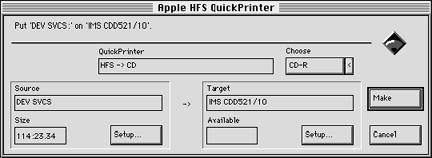

To create the final master CD-ROM in HFS format, follow these steps:
The dialog shown in the figure below appears:

Figure 1: QuickTOPiX dialog for creating a CD-ROM for delivery.
The partition is recorded to disc.
The QuickTOPiX status window appears and reports the progress of the mastering process. The transfer rate should be between 295 KB/s and 300 KB/s. When the process is finished, "Ready" appears in the status window.
Caution: Do not open the drawer too soon. The Writing light turns off once, then turns on as the lead data is written.